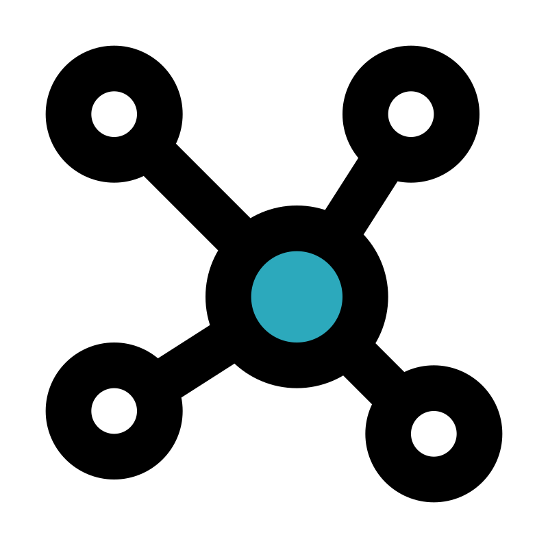

My projects
First principle study of doped \(NiO_2\) to enhance amonia reduction reaction (On-going)
I'm working on this project alongside with my PI in Academia Sinica for my internship. On-site participation is from July to September, but we have been working on this in advance to ensure maximum output.
Ammonia oxidation reaction (AOR) is a key anodic process for direct ammonia fuel cells (DAFCs) and for converting ammonia into benign nitrogen products while generating electricity. As ammonia offers high hydrogen density and easier storage than \(H_2\), improving AOR efficiency is crucial for establishing a sustainable hydrogen–ammonia energy cycle. Building on A Density Functional Theory Investigation of Ammonia Oxidation Pathways on Nickel Oxide, which identified the first dehydrogenation step (\(*NH_3\) - \(*NH_2\), \(\Delta G = 1.25\,eV\)) as the universal potential-determining step on \(NiO(100)\), we aim to lower this barrier by transtion metal dopants. Dopants possessing multiple oxidation states, such as \(V\), \(Cr\), \(Fe\), or \(Mn\), can tune the \(Ni\) \(3d–O\, 2p\) hybridization, enhance charge delocalization, and stabilize the \(*NH_2\) intermediate, thereby accelerating the proton–electron transfer.
An introductory book on quantum mechanics (On-going)
During my undergraduate studies, I encountered numerous textbooks on quantum mechanics, yet not a single one satisfied my personal demand for both mathematical rigor and physical intuition. Most university courses rely on these standard texts, leaving students with a sense of "missing pieces" that forced me to forage through online resources.
My goal is to write a book that incorporates insights such as
-
Foundation in linear algebra: Quantum mechanics should be built upon linear algebra from the very first page. Popular introductory books, such as the one by David Griffiths, often approach the subject by solving the Schrödinger equation for the wave function immediately. This approach misses the most critical insight: the wave function is a vector, and function space is a vector space. By treating the wave function as an element of a Hilbert space, the abstract operations of quantum mechanics become geometrically intuitive. Students must be comfortable with the concepts of vectors, matrices, eigenvalues, eigenvectors, change of basis, and inner products—all of which have direct, indispensable counterparts in the quantum world.
-
Refining the Subtleties: Most introductory books gloss over the "refined details" when solving simple systems, leaving gaps in a student's conceptual framework. My approach focuses on:
-
The Origin of Uncertainty: Heisenberg’s Uncertainty Principle is often taught as a mysterious "fuzziness." In reality, it is a rigorous consequence of non-commuting operators. When two operators do not commute, an eigenstate of one must be expressed as a linear combination of the eigenstates of the other. This relationship has a direct correspondence to the Fourier transform—a beautiful mathematical symmetry that is often neglected in undergraduate curricula.
-
The Paradox of Tunneling: Why doesn't quantum tunneling violate the conservation of energy? This cannot be fully understood without introducing the concept of motion integrals and quantum uncertainty. Furthermore, many students are left wondering what the "average momentum" of a particle is while it exists inside a potential barrier. My book aims to clarify these nuances by deriving qualitative physical pictures directly from mathematical rigor.
-
Beyond the equations, I want to incorporate visualization tools to bridge the gap between abstract math and physical reality. By leveraging modern visualization, we can show how the rigorous properties of linear operators translate into the behavior of physical systems. The ultimate objective of this project is to create a resource where the math is not just a tool for calculation, but the very source of physical intuition.
I have also dedicated an online version in english here since the book is for Vietnamese student.
Molecular dynamics studies of two-dimensional lateral heterostructures (On-going)
